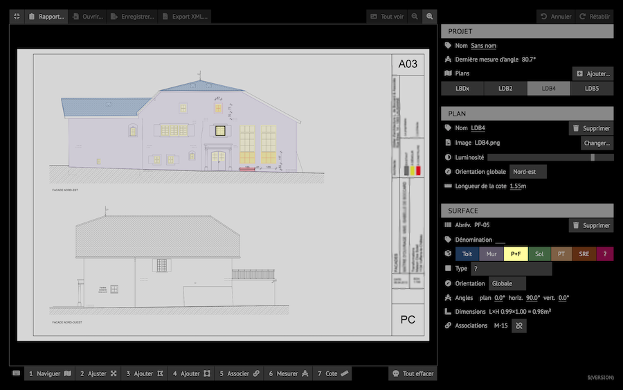

Brr_note_kit.UiGraphical user interaction.
Warning. This will definitively break in the future.
Note based GUI toolkit.
XXX.
module Group : sig ... endElement groups.
module Label : sig ... endLabels.
module Button : sig ... endButtons.
module Jstr_editor : sig ... endString editors.
module Value_selector : sig ... endValue selectors
module Float_selector : sig ... endFloating point value selector.